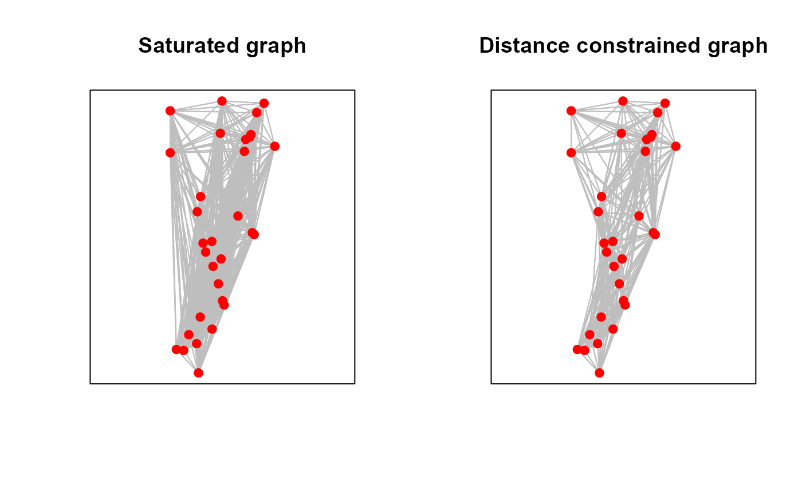

Creates a kNN or saturated graph SpatialLinesDataFrame object
Usage
knn.graph(
x,
row.names = NULL,
k = NULL,
max.dist = NULL,
long.lat = FALSE,
drop.lower = FALSE,
as.sp = FALSE
)Arguments
- x
sf POINTS object
- row.names
Unique row.names assigned to results
- k
K nearest neighbors, defaults to saturated (n(x) - 1)
- max.dist
Maximum length of an edge (used for distance constraint)
- long.lat
(FALSE/TRUE) Coordinates are longitude-latitude decimal degrees, in which case distances are measured in kilometers
- drop.lower
(FALSE/TRUE) Drop lower triangle of matrix representing duplicate edges ie, from-to and to-from
- as.sp
(FALSE/TRUE) Output sp class SpatialLinesDataFrame object
Value
SpatialLinesDataFrame object with:
i Name of column in x with FROM (origin) index
j Name of column in x with TO (destination) index
from_ID Name of column in x with FROM (origin) region ID
to_ID Name of column in x with TO (destination) region ID
length Length of each edge (line) in projection units or kilometers if not projected
References
Murphy, M. A. & J.S. Evans. (in prep). "GenNetIt: gravity analysis in R for landscape genetics"
Murphy M.A., R. Dezzani, D.S. Pilliod & A.S. Storfer (2010) Landscape genetics of high mountain frog metapopulations. Molecular Ecology 19(17):3634-3649
Author
Jeffrey S. Evans jeffrey_evans@tnc.org and Melanie Murphy melanie.murphy@uwyo.edu
Examples
library(sf)
data(ralu.site, package="GeNetIt")
ralu.site <- as(ralu.site, "sf")
# Saturated spatial graph
sat.graph <- knn.graph(ralu.site, row.names=ralu.site$SiteName)
head(sat.graph)
#> Simple feature collection with 6 features and 6 fields
#> Geometry type: LINESTRING
#> Dimension: XY
#> Bounding box: xmin: 687938.4 ymin: 4996675 xmax: 690104 ymax: 5003207
#> CRS: +proj=utm +zone=11 +ellps=GRS80 +towgs84=0,0,0,0,0,0,0 +units=m +no_defs
#> i j from_ID to_ID wt geometry length
#> 1 1 2 AirplaneLake BachelorMeadow 1 LINESTRING (688816.6 500320... 4126.977
#> 2 1 3 AirplaneLake BarkingFoxLake 1 LINESTRING (688816.6 500320... 3110.794
#> 3 1 4 AirplaneLake BirdbillLake 1 LINESTRING (688816.6 500320... 1144.150
#> 4 1 5 AirplaneLake BobLake 1 LINESTRING (688816.6 500320... 4062.216
#> 5 1 6 AirplaneLake CacheLake 1 LINESTRING (688816.6 500320... 5726.773
#> 6 1 7 AirplaneLake DoeLake 1 LINESTRING (688816.6 500320... 6533.927
# Distanced constrained spatial graph
dist.graph <- knn.graph(ralu.site, row.names=ralu.site$SiteName,
max.dist = 5000)
opar <- par(no.readonly=TRUE)
par(mfrow=c(1,2))
plot(st_geometry(sat.graph), col="grey")
points(st_coordinates(ralu.site), col="red", pch=20, cex=1.5)
box()
title("Saturated graph")
plot(st_geometry(dist.graph), col="grey")
points(st_coordinates(ralu.site), col="red", pch=20, cex=1.5)
box()
title("Distance constrained graph")

par(opar)